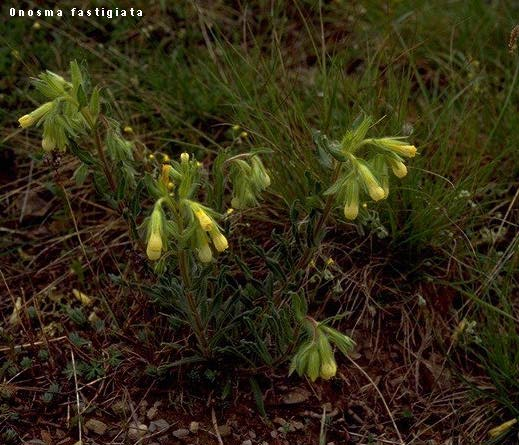
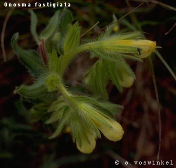

Genus: OnosmaGenus description:Biennial or perennial, hispid herbs. Flowers in terminal, usually branched, bracteate cymes. Calyx lobed almost to then base, often accrescent. Corolla yellow, whitis or purplish, tubular to tubular-campanulate, with 5 short, patent or deflexed lobes, without scales, but with an annulus near the base. Stamens included or exserted, inserted at about the middle of the corolla; anthers sagittate at base, usually with a projecting connective at the apex. Style exserted; stigma capitate to bifid. Nutlets somtimes fewer than 4 by abortion, ovoid or trigonous, acute or beaked, erect, smooth or tuberculate, with triangular, flat base.In addition to the setae with an enlarged base. known for many genera of the Boraginaceae, many species of Onosma have setae with usually 4-20 rays arising from the base. These are referred to as stellate setae, and are fully described by Javorka (loc.sit). The central seta is occasionally absent from these hairs, but usually it is distincly longer and stouter than the rays. The description of the stellate setae in this account are of those found on the lower leaves. The genus presents considerable taxonomic difficulties , particularly in C. & S.E Europe, which cannot be resolved without experimental investigation. The presence or absence of stellate setae is widely used as major character in the genus, but in a number of species (particularly 13-20) ther may be a wde range of variation in the presence, frequency and length of the stellate setae. There has, in the past, been considerable nomemclatural confusion and the following names have been widely misapplied: O.echiodes, O.setosa, O.stellulata and O.taurica. This grows in the South of France and Italy, you might have seen it while you were on holiday in the area. You may even have eaten it - it is in the Borage Family, a plant that is often eaten in the Mediterranean. It makes a delicious dish while playing poker in Monaco or sunbathing in the French or Italian Riviera. All species occur in dry, sunny habitats. Species and images:   |